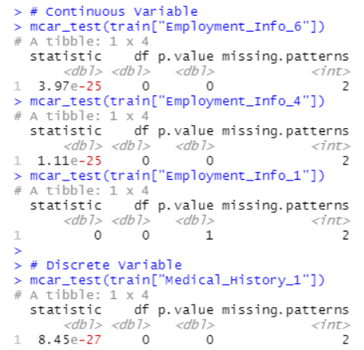

Abstract
A vital area of the life insurance business is classifying its applicants by assessing their risk. Referring to Legal & General's guidelines as a reference, the underwriting process of accepting an insurance application accounts for all the information provided by the applicant. The decision of whether or not to accept the application is a result of the assessed risk based on a combination of factors sourced from the provided information.
As the use of automated decision making models have become increasingly prevalent in the industry, the underwriting process has benefitted from the decrease in application processing times. Automated risk socring is capable of saving time and decreasing subjectivity or unintentional biases, thus simplifying the task of manually processing applications.
This paper explores useful machine learning algorithms that can be used to accurately predict an applicant's risk when applying for a life insurance policy. This paper also briefly discusses the ethics surrounding automated decision making models.
Data Overview
The dataset explored was sourced from Prudential Life Insurance on Kaggle on their competition titled "Prudential Life Insurance Assessment". The dataset contains 59,381 entries with a total of 128 features. 13 of those features contained a number of missing values, 9 of which were missing at least 30% of its data - these were dropped from the dataset.
Three of the remaining four categories (Employment_Info_6, Employment_Info_4 and Employment_Info_1) were continuous and Med_History_1 was discrete. The Little's Test was performed using R Studio to classify whether they were one of the following three categories:

As seen above, three of the variable's p-value was less than 0.05 which implies that the data is not MCAR so it can alternatively be MAR or MNAR. For the feature "Employment_Info_1" however, the p-value is 1 which is reason to beleive that the feature may be MCAR. Thus, the analysis remains unbiased because the missingness of the data does not result in a bias in the parameters.
The missing data from the four features were imputed using the KNNImputer module from Sklearn. The resulting dataset contained no missing values.
Initial exploratory data analysis showed BMI was skewed to the right though the Age has a broad spread throughout the middle. This was expected as people around the ages of the late 20s and 50s are more likely to undertake a life insurance policy.
Results & Discussion
The data was split into a training set of 80% and a test set of 20%. GridSearch was used to select optimial hyperparameters for the selected algorithms. The K-Nearest Neighbour model was first estimated on the training set and the obtained model then applied to the test set. The model assumes that entries that are similar are in close proximity of others and thus belong to similar classes. The KNN was selected as a base model to be used in comparison with the logistic regression and XGBoost models. The logistic regression and XGBoost algorithms were selected as the task at hand is a multi-class classification. The graphs below shows a comparison of the mean absolute error and mean squared error of the 3 algorithms.
The use of both the Logistic Regression and XGBoost model greatly improves the predictive accuracy, as seen in the reduction of both the Mean Absolute Error and Mean Squared Error. The table below is a comparison of accuracy scores across the three models, confirming that the XGBoost models does improve the predictive performance of the model.
Conclusion
The increasing use of Artificial Intelligence in automated decision-making in the insurance industry has proved beneficial with respect to decreased processing time and reduction in human error. There is however, room for improvement for the proposed models in deciding the appropriate combinations of features that increase the predictive accuracy of the proposed models.
In light of the recent discussions surrounding Ethical Artificial Intelligence, future work that is proposed in extension of this paper is an exploration into model explainability and transparency. An example is a written paper by Bussmann et al. (2020) proposes the use of Shapley values alongside the XGBoost model in predicting peer-to-peer lending approval. This will contirbute to the focus on fairness in AI decision-making and in the context of life insurance approval, allowing the customers to understand why their application was either accepted or rejected. On the other hand, this will also benefit model developers by highlighting features that have a higher contribution towards a model's results which in turn can improve feature selection.